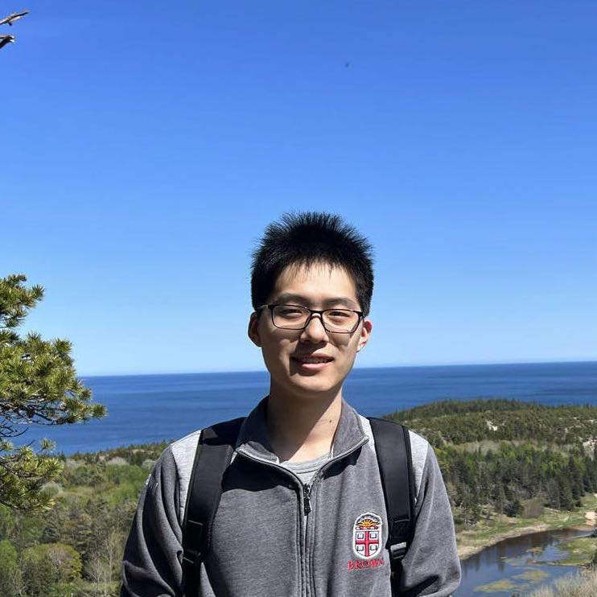
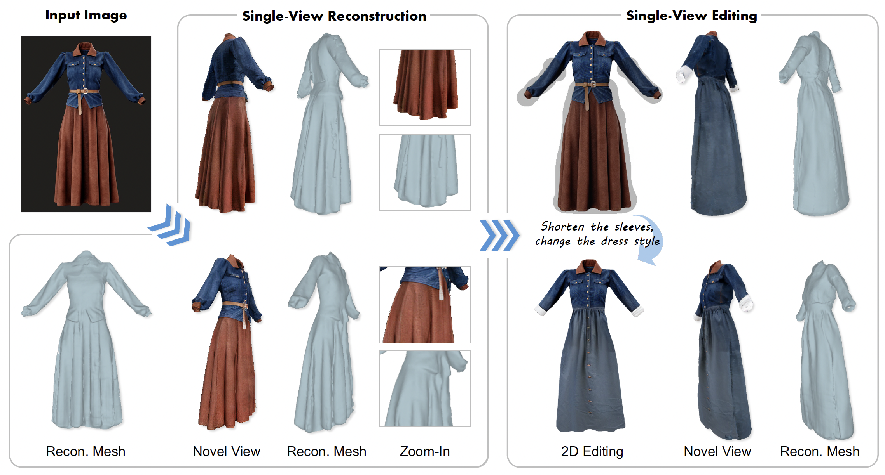
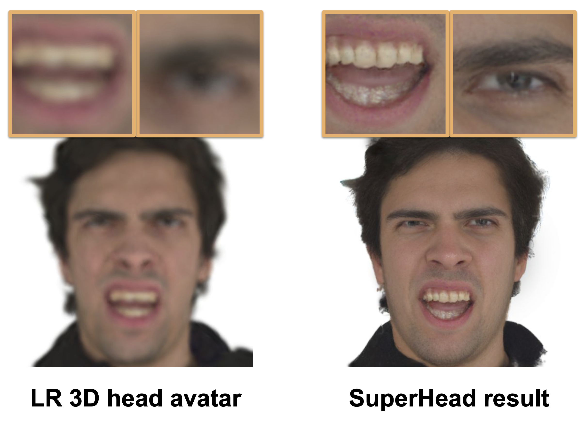
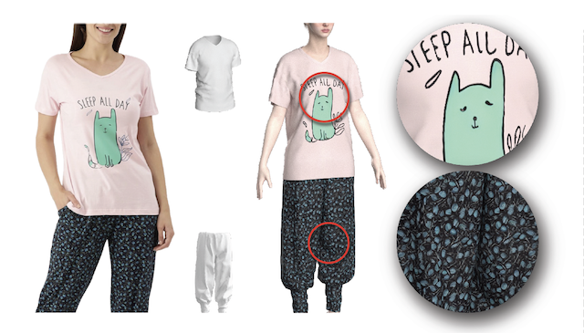

Experience
Google Research
June 2025 – Present
Student Researcher

I am a first-year PhD student at the Graphics and Imaging Lab (GRAIL) at the University of Washington, co-advised by Prof. Steve Seitz and Prof. Ira Kemelmacher-Shlizerman.
Previously, I was a master student in the Robotics Institute at Carnegie Mellon University, where I worked in the Human Sensing Lab under the guidance of Prof. Fernando De la Torre. I earned my Sc.B. Honors degree in Applied Mathematics – Computer Science from Brown University in 2023, where I was advised by Prof. James Tompkin.

3DV 2026
3DV 2026
SIGGRAPH Asia